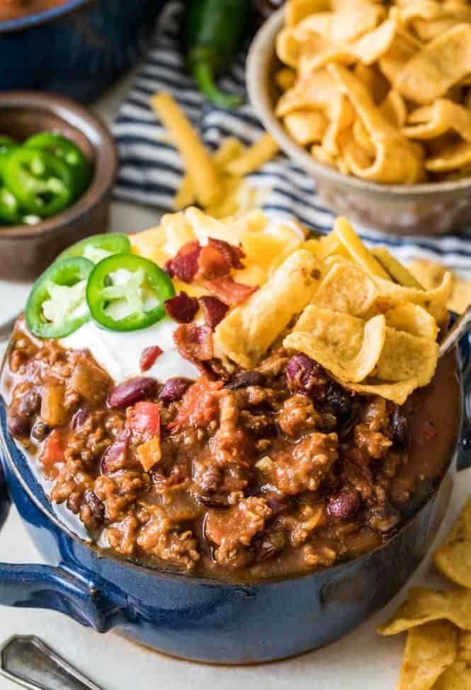
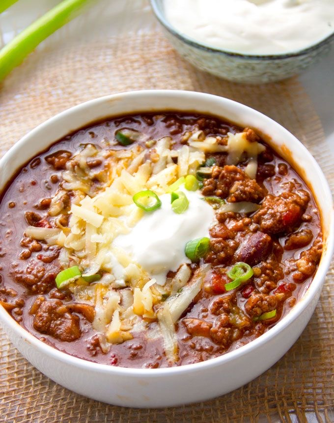
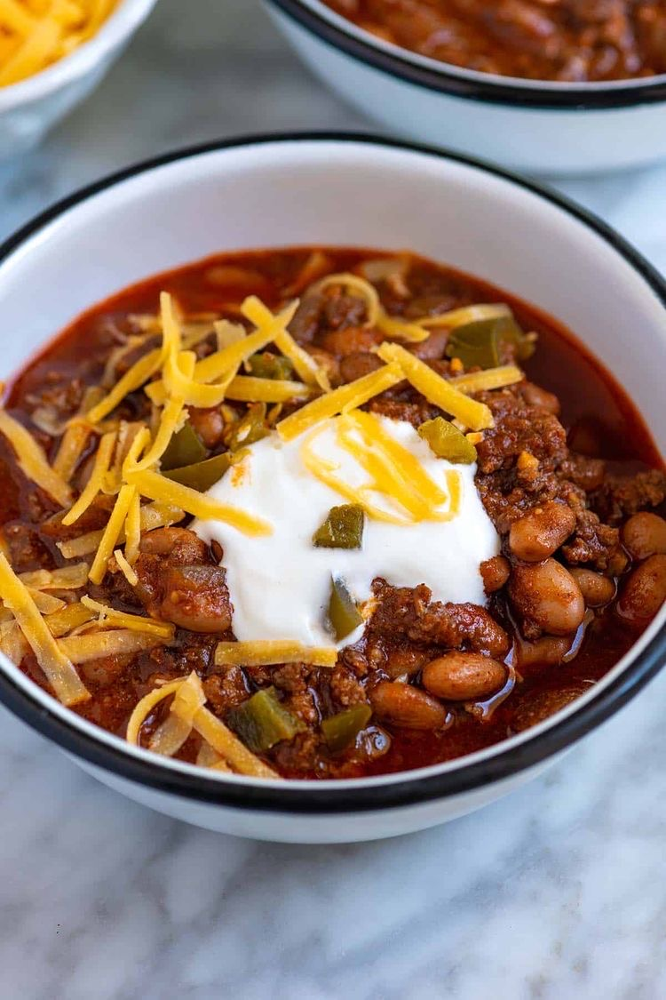

The Name of my Favorite Meal is Crockpot Chili
About Crockpot Chili
Crockpot chili is a bowl of chile con carne commonly called simply "chile"
in North American English.
It is called Chili bowl because bobby Berryhill, a Tulsa businessman,
owned a food service company
named the "Original Chilli Bowl" and came onboard as the sponsor of the
1987 Midget nationals.
The company made pre-mix and pre-made chili for distribution
nationwide.
List of Ingredients needed to prepare Crockpot Chili and measurements.
| Ingredients | Measurements |
|---|---|
| Ground beef | 1lb |
| Coarsely chopped onion | 1 |
| Can whole tomatoes | 1.32 oz |
| Chicken broth or water | 2 cups |
| Chili powder | 1/2 cup |
| Worcetershire sauce | 1 tbsp. |
| Chopped garlic | 1 tbsp. |
| Dried oregano | 1 tbsp. |
| Ground cumin | 2 tsp. |
| Dried basil | 1 tsp |
| Salt | 1 tsp. |
| Pepper | 1 tsp. |
| Cayenne pepper | 1 tsp |
| Paprika | 1 tsp. |
| Sugar | 1 tsp. |
| Corn chips | 1.10.5 oz |
| Shredded Cheddar | 1.08 oz |
| Paprika | 1 tsp. |
List of steps on how to prepare Crockpot Chili
- In a medium pan, fry the ground beef until the pink color is gone and the meat turns brown.
- Add the chopped onion and continue to cook until soft.
- add all remaining ingredients and spices in no particular order and simmer on low heat for one hour, covered.
- Garnish wit h cheese and serve with chips.
List of food photos



